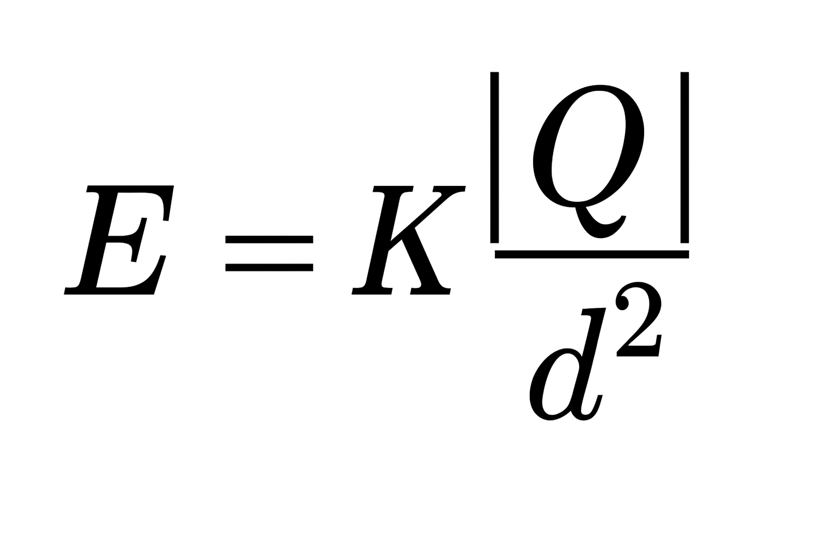
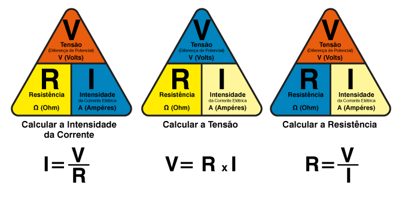
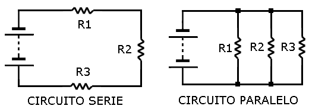

Bem-vindo ao EletroFísica Este é um espaço criado para facilitar o aprendizado de Eletrostática e Circuitos Elétricos de forma simples e acessível. Aqui você encontrará explicações teóricas, fórmulas essenciais, além de vídeos que vão ajudar a visualizar os conceitos na prática. Explore o conteúdo, revise os temas e aprenda no seu ritmo.
É a interação entre cargas elétricas, podendo ser atrativa (cargas opostas) ou repulsiva (cargas iguais). Sua intensidade é descrita pela Lei de Coulomb e depende da carga envolvida e da distância entre elas.
É a região do espaço onde uma carga elétrica exerce influência. Representa a força que uma carga de prova positiva sofreria em determinado ponto, sendo uma forma de visualizar e calcular interações elétricas.
Corresponde à energia elétrica disponível por unidade de carga em um ponto do espaço. Está ligado à ideia de diferença de potencial (tensão), responsável pelo movimento das cargas em um circuito.
Relaciona tensão, corrente e resistência em um condutor: . Mostra que a corrente é proporcional à voltagem aplicada e inversamente proporcional à resistência do material.
São sistemas formados por fontes de energia, condutores e dispositivos elétricos que permitem o fluxo de corrente. Podem ser simples (série e paralelo) ou complexos, estando na base de toda a eletrônica moderna.
